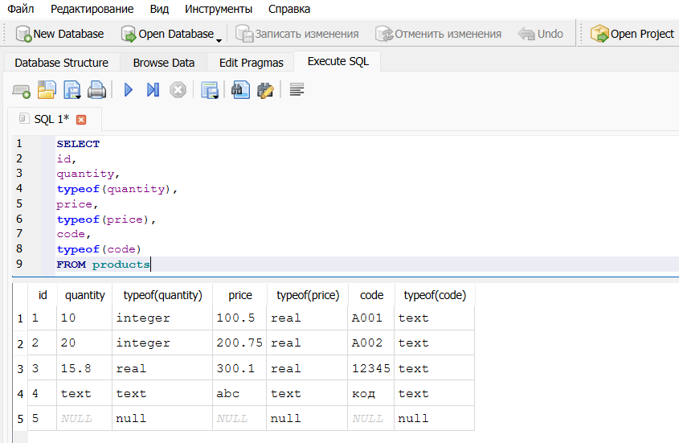
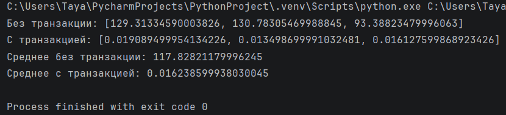
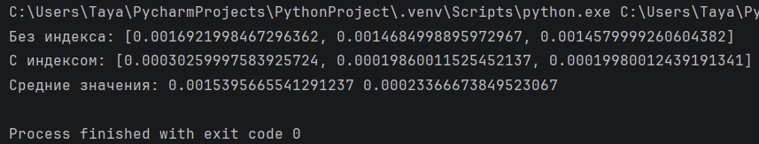
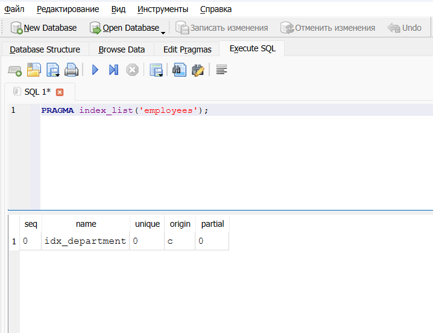

Лабораторная работа: Исследование особенностей SQLite
Цель работы:
Изучить динамическую типизацию данных в SQLite, влияние транзакций на скорость массовой вставки и влияние индексов на скорость выполнения запросов поиска.
Используемые программные средства:
- Python 3.11+ (встроенный модуль sqlite3)
- DB Browser for SQLite 3.13+
- Модуль time (функция perf_counter)
- Операционная система Windows 11
Шаг 1. Исследование динамической типизации SQLite
Задание
- Создать таблицу
productsс объявленными типами столбцовINTEGER,REAL,TEXT. -
Вставить пять записей с разнородными данными:
-
целые значения;
-
строки, содержащие числа;
-
вещественные значения;
-
текстовые значения;
-
значения
NULL. -
Выполнить запрос, возвращающий значения всех столбцов и их фактические типы с помощью
typeof().
Полный листинг скрипта
import sqlite3
# Подключаемся к базе данных (файл lab.db будет создан, если его нет).
conn = sqlite3.connect('lab.db')
# Создаём курсор для выполнения SQL-запросов.
cursor = conn.cursor()
# Удаляем таблицу products, если она уже существует, чтобы начать с чистого листа.
cursor.execute("DROP TABLE IF EXISTS products")
# Создаём таблицу products с явно указанными типами столбцов.
# - id : INTEGER PRIMARY KEY
# - quantity : INTEGER
# - price : REAL
# - code : TEXT
cursor.execute("""
CREATE TABLE products(
id INTEGER PRIMARY KEY,
quantity INTEGER,
price REAL,
code TEXT
)
""")
# Формируем тестовый набор из пяти записей, иллюстрирующий гибкость типов.
# Записи специально содержат значения, типы которых не всегда совпадают
# с объявленными типами столбцов.
data = [
# 1. Запись с целыми значениями, соответствующими схеме.
(1, 10, 100.5, "A001"),
# 2. Числовые значения, переданные как строки.
(2, "20", "200.75", "A002"),
# 3. Вещественное число в INTEGER-столбце, целое число в TEXT-столбце.
(3, 15.8, 300.1, 12345),
# 4. Текстовые значения, не являющиеся числами, в том числе кириллица.
(4, "text", "abc", "код"),
# 5. Все значения равны NULL.
(5, None, None, None)
]
# Массовая вставка всех пяти записей одной командой.
cursor.executemany(
"INSERT INTO products VALUES (?, ?, ?, ?)",
data
)
# Фиксируем изменения в базе данных.
conn.commit()
# Выполняем запрос, который для каждой строки возвращает значения столбцов
# и их фактический тип, определённый функцией typeof().
cursor.execute("""
SELECT
id,
quantity,
typeof(quantity),
price,
typeof(price),
code,
typeof(code)
FROM products
""")
# Извлекаем все строки результата.
rows = cursor.fetchall()
# Выводим каждую строку в консоль для анализа.
for row in rows:
print(row)
# Закрываем соединение с базой данных.
conn.close()
Результат выполнения запроса с typeof()

Вывод в консоли:
(1, 10, 'integer', 100.5, 'real', 'A001', 'text')
(2, 20, 'integer', 200.75, 'real', 'A002', 'text')
(3, 15.8, 'real', 300.1, 'real', '12345', 'text')
(4, 'text', 'text', 'abc', 'text', 'код', 'text')
(5, None, 'null', None, 'null', None, 'null')
Вывод по динамической типизации:
SQLite не принуждает данные строго соответствовать объявленному типу столбца (type affinity). Строки, содержащие числа, могут быть сохранены как integer или real. Явный текст и значения NULL сохраняются как есть. Таким образом, тип значения определяется самим значением, а не только схемой таблицы.
Шаг 2. Влияние транзакций на скорость массовой вставки
Задание
Сравнить скорость вставки 15 000 записей в таблицу users двумя способами:
-
с выполнением
commit()после каждой вставки (без общей транзакции); -
с использованием одной общей транзакции (один
commit()в конце).
Структура таблицы:
CREATE TABLE users(
id INTEGER PRIMARY KEY,
name TEXT
);
(i, 'name_i') для i от 1 до 15000.
Для каждого варианта проводится три измерения, результат — среднее арифметическое.
Полный листинг скрипта
import sqlite3
import time
# Списки для хранения результатов измерений по каждому варианту.
times_no_transaction = [] # Время вставки с коммитом после каждой строки.
times_single_transaction = [] # Время вставки в одной транзакции.
# Эксперимент 1: вставка с коммитом после каждой строки (без общей транзакции)
for i in range(3):
# Открываем новое соединение с базой данных.
conn = sqlite3.connect("lab.db")
cursor = conn.cursor()
# Пересоздаём таблицу users перед каждым измерением, чтобы обеспечить
# одинаковые начальные условия.
cursor.execute("DROP TABLE IF EXISTS users")
cursor.execute("""
CREATE TABLE users(
id INTEGER PRIMARY KEY,
name TEXT
)
""")
# Формируем 15000 записей вида (1, "name_1") ... (15000, "name_15000").
data = [(i, f"name_{i}") for i in range(1, 15001)]
# Фиксируем момент начала вставки.
start = time.perf_counter()
# Вставляем записи по одной, выполняя commit() после каждой.
for row in data:
cursor.execute("INSERT INTO users VALUES (?, ?)", row)
conn.commit()
# Конец измеряемого интервала.
end = time.perf_counter()
# Сохраняем длительность текущего измерения.
times_no_transaction.append(end - start)
# Закрываем соединение.
conn.close()
# Эксперимент 2: вставка всех записей в рамках одной транзакции
for i in range(3):
conn = sqlite3.connect("lab.db")
cursor = conn.cursor()
cursor.execute("DROP TABLE IF EXISTS users")
cursor.execute("""
CREATE TABLE users(
id INTEGER PRIMARY KEY,
name TEXT
)
""")
data = [(i, f"name_{i}") for i in range(1, 15001)]
start = time.perf_counter()
# Массовая вставка всех записей одним вызовом executemany().
# Фиксация выполняется единожды после вставки всех строк.
cursor.executemany("INSERT INTO users VALUES (?, ?)", data)
conn.commit()
end = time.perf_counter()
times_single_transaction.append(end - start)
conn.close()
# Вывод результатов
print("Без транзакции:", times_no_transaction)
print("С транзакцией:", times_single_transaction)
# Вычисляем и выводим среднее арифметическое трёх измерений.
print("Среднее без транзакции:",
sum(times_no_transaction) / len(times_no_transaction))
print("Среднее с транзакцией:",
sum(times_single_transaction) / len(times_single_transaction))
Результаты измерений

| № измерения | Без общей транзакции, с | Одна транзакция, с |
|---|---|---|
| 1 | 129.31334590003826 | 0.019089499954134226 |
| 2 | 130.78305469988845 | 0.013498699991032481 |
| 3 | 93.38823479996063 | 0.016127599868923426 |
| Среднее | 117.82821179996245 | 0.016238599938030045 |
Вывод по транзакциям:
Вставка с коммитом после каждой строки вызывает огромные накладные расходы, так как каждая мини-транзакция требует синхронизации журнала с диском. Группировка всех вставок в одну транзакцию позволяет выполнить запись на диск только один раз, что ускоряет операцию в десятки раз. Для массовых операций в SQLite всегда следует использовать единую транзакцию.
Шаг 3. Влияние индексов на скорость поиска
Задание
Создать таблицу employees с 50 000 записей, где department = i % 100. Выполнить запрос SELECT * FROM employees WHERE department = 50; и измерить время его выполнения без индекса и после создания индекса idx_department. Для каждого варианта — три измерения, вычисляется среднее.
Структура таблицы:
CREATE TABLE employees(
id INTEGER PRIMARY KEY,
department INTEGER
);
CREATE INDEX idx_department ON employees(department);
Полный листинг скрипта
import sqlite3
import time
# Подключаемся к базе данных.
conn = sqlite3.connect("lab.db")
cursor = conn.cursor()
# Пересоздаём таблицу employees для чистоты эксперимента.
cursor.execute("DROP TABLE IF EXISTS employees")
cursor.execute("""
CREATE TABLE employees(
id INTEGER PRIMARY KEY,
department INTEGER
)
""")
# Формируем данные: 50000 записей.
# id от 1 до 50000, department = остаток от деления id на 100.
# Такой способ даёт примерно по 500 строк на каждое значение department.
data = [(i, i % 100) for i in range(1, 50001)]
# Массовая вставка всех записей одной транзакцией.
cursor.executemany("INSERT INTO employees VALUES (?, ?)", data)
conn.commit()
# Список для хранения времени выполнения запросов без индекса.
times_without_index = []
# Три измерения времени выполнения запроса без индекса.
for i in range(3):
start = time.perf_counter()
cursor.execute("""
SELECT *
FROM employees
WHERE department = 50
""")
cursor.fetchall()
end = time.perf_counter()
times_without_index.append(end - start)
# Создаём индекс по столбцу department для ускорения поиска.
cursor.execute("""
CREATE INDEX idx_department
ON employees (department)
""")
conn.commit()
# Список для хранения времени выполнения запросов с индексом.
times_with_index = []
# Три измерения времени выполнения того же запроса, но уже при наличии индекса.
for i in range(3):
start = time.perf_counter()
cursor.execute("""
SELECT *
FROM employees
WHERE department = 50
""")
cursor.fetchall()
end = time.perf_counter()
times_with_index.append(end - start)
# Вывод результатов измерений и средних значений.
print("Без индекса:", times_without_index)
print("С индексом:", times_with_index)
avg_without = sum(times_without_index) / len(times_without_index)
avg_with = sum(times_with_index) / len(times_with_index)
print("Средние значения:", avg_without, avg_with)
# Закрываем соединение с базой данных.
conn.close()
Результаты измерений

| № измерения | Без индекса, с | С индексом, с |
|---|---|---|
| 1 | 0.0016921998467296362 | 0.00030259997583925724 |
| 2 | 0.0014684998895972967 | 0.00019860011525452137 |
| 3 | 0.0014579999260604382 | 0.00019980012439191341 |
| Среднее | 0.0015395665541291237 | 0.00023366673849523067 |
Подтверждение существования индекса
Выполнена команда PRAGMA index_list('employees'); в DB Browser for SQLite. Результат:

Это доказывает, что индекс idx_department успешно создан и используется таблицей employees.
Вывод по индексам:
Индекс по столбцу department немного ускоряет выполнение запроса — вместо полного сканирования 50 000 строк SQLite использует индекс для прямого доступа к нужным записям. Время поиска сократилось, однакр конкретные значения зависят от аппаратного обеспечения. Индексы крайне полезны для ускорения операций чтения, однако могут замедлять вставку и обновление данных.
Общие выводы по лабораторной работе
- Динамическая типизация — SQLite позволяет хранить в одном столбце значения разных типов благодаря механизму type affinity. Это даёт гибкость, но требует внимательности при проектировании схемы и обработке результатов запросов.
- Транзакции — массовая вставка данных в рамках одной транзакции многократно быстрее, чем при выполнении
commit()после каждой строки. При работе с большими объёмами данных необходимо группировать операции в минимальное число транзакций. - Индексы — правильно созданный индекс ускоряет выполнение поисковых запросов, позволяя избежать полного перебора таблицы. В то же время индексы увеличивают накладные расходы при вставке, поэтому их следует добавлять обдуманно, ориентируясь на типичные сценарии использования базы данных.